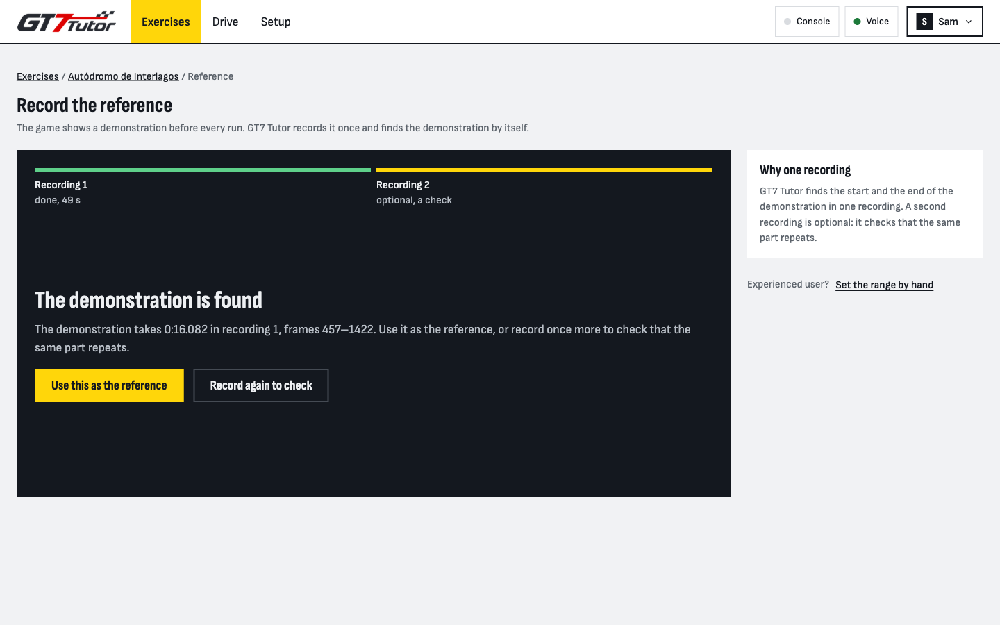
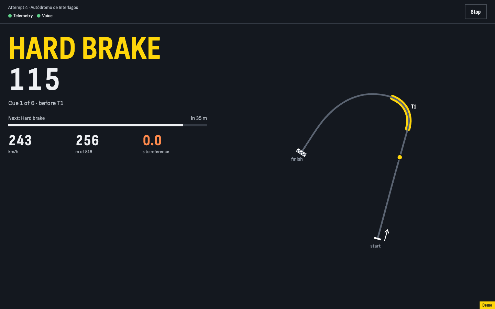
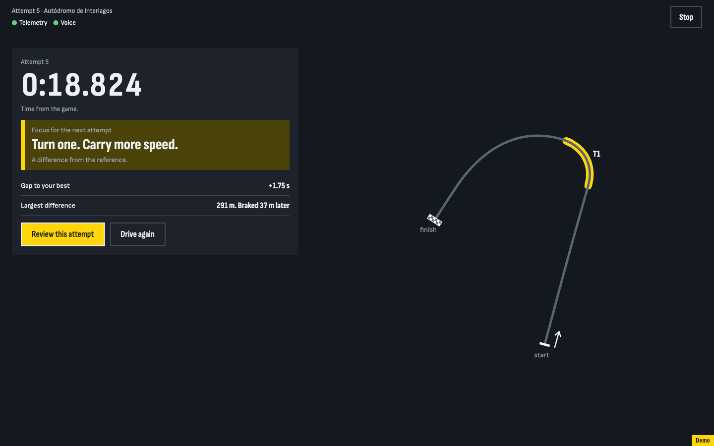

For players who practise
GT7 Tutor is for a player who drives the licence tests, the Circuit Experience or the Brand Central exercises again and again, and wants to know where the time goes. It is free, and it runs on your own computer at home. You need no account, and your profiles, references and attempts stay on that computer.
How a training goes
For each exercise, GT7 Tutor leads you through three steps. The screen always shows the next one.
-
1Record the reference
Open the exercise in the game, start a recording in GT7 Tutor and let the demonstration play once. GT7 Tutor finds the start and the end of the demonstration by itself. That drive becomes the reference: the cues and the comparison come from it. A second recording is optional and checks that the same part repeats.

-
2Drive with the cues
Select Start an attempt, then drive the exercise in the game. GT7 Tutor finds the start and the finish by itself, and your time is the time that the game gives. The screen shows the next action, your speed and the gap to the reference. The voice names the action: “Hard brake. One fifteen”, “Full throttle”, or “Closer to apex” when you run wide before an apex. You choose the help: the voice on a computer or a phone, no voice, or single cues muted.

-
3Review
Compare each attempt with the reference on a map and in linked speed, pedal and side-distance charts. The review groups the differences by turn and shows the time lost in each turn. A difference is not always a mistake: the reference is one recorded drive, not the best possible line.

What you can do
-
Tune each cue
The cue list shows every cue with its distance, phrase and target speed, and each turn with its apex. Hear a cue, mute it, or move it up to 1 s earlier. Places where the same difference repeats in your recent attempts show in yellow, for example “Slower in the corner in 7 of 7 attempts”.

-
Get one focus after each attempt
The summary shows the time from the game, the gap to your best time and the largest difference. The voice says one focus for the next attempt, such as “Turn one. Carry more speed.”

-
Pick exercises from the catalogue
Find an exercise by name, track, car or code. The catalogue lists 100 licence tests, 58 Circuit Experience sections and 20 Brand Central exercises from public sources. For an activity that it does not list, such as a Time Trial, create your own exercise.
GT7 Tutor can follow an exercise only when the game times its demonstration and your run from the start.

What you need
- A PS5 with Gran Turismo 7.
- A Mac or a Linux computer on the same home network as the PS5. Windows is not supported.
- Two free programs on that computer, Docker and Node.js. The setup guide shows how to install them and start GT7 Tutor.
- A browser on that computer or on your phone. The voice plays on one of them. On a phone, keep the screen on during a session.
Try it
The demo replays three recorded attempts of Autódromo de Interlagos on your computer, with the cues and the voice. You need no PS5 for it. The user guide shows every screen, from the first profile to the review.
Enjoying GT7 Tutor?
GT7 Tutor is free and open source, and it stays free. If it helps you, you can support it with a small donation. A donation is voluntary and unlocks nothing: every feature is in the free code.